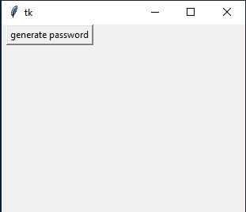
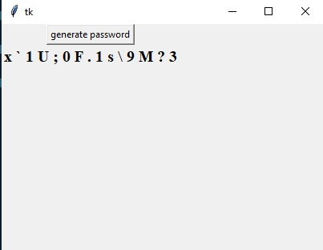

1. Once you run the program in IDLE you come across the below screen where you can see a window and a button "Generate Password"
2. Once you click on the "Generate Password" button a random password is generates which consists of alphabets, symbols and numbers.
